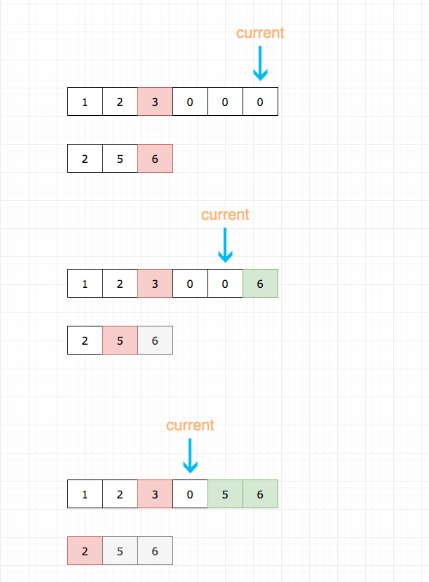
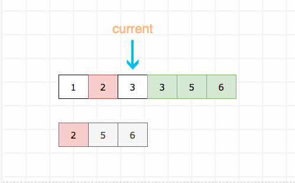
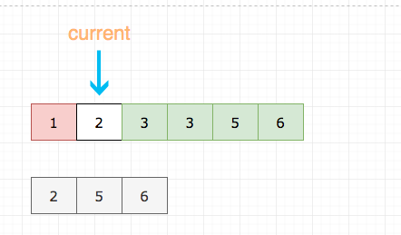

Question: 88 Merge_sorted_array
Given two sorted integer arrays nums1 and nums2, merge nums2 into nums1 as one sorted array.
Note:
The number of elements initialized in nums1 and nums2 are m and n respectively.
You may assume that nums1 has enough space (size that is greater or equal to m + n) to hold additional elements from nums2.
Example:
Input:
nums1 = [1,2,3,0,0,0], m = 3
nums2 = [2,5,6], n = 3
Output: [1,2,2,3,5,6]
Resources:
https://github.com/azl397985856/leetcode/blob/master/problems/88.merge-sorted-array.md
Key Points
符合直觉的做法是将nums2插到num1的末尾, 然后排序
// 这种解法连m都用不到
// 这显然不是出题人的意思
if (n === 0) return;
let current2 = 0;
for(let i = nums1.length - 1; i >= nums1.length - n ; i--) {
nums1[i] = nums2[current2++];
}
nums1.sort((a, b) => a - b);
// 当然你可以自己写排序，这里懒得写了，
//因为已经偏离了题目本身
我这里理解可以将 arr2 直接加到arr1 的后面，然后进行排序就可以了
var arr1=[1,2,3];
var arr2=[3,4,5];
arr1.push.apply(arr1,arr2);
console.log(arr1.sort()); // [1,2,3,3,4,5]
这里没有考虑到0这个元素，和题目不符合，那么考虑到0，并且需要删除的话，需要进行遍历，这里只考虑arr1当中有0的情况
var arr1=[1,2,3,0,0,0];
var arr2=[3,4,5];
arr1.push.apply(arr1,arr2);
arr1.sort();
console.log(arr1);
for(let i=0;i < arr1.length;i++){
if (arr1[0]===0){arr1.shift();}
}
console.log(arr1);
这里要求原地修改，其实我们能只要从后往前比较，并从后往前插入即可。
我们需要三个指针：
- current 用于记录当前填补到那个位置了
- m 用于记录 nums1 数组处理到哪个元素了
- n 用于记录 nums2 数组处理到哪个元素了
如图所示：
- 灰色代表 num2 数组已经处理过的元素
- 红色代表当前正在进行比较的元素
- 绿色代表已经就位的元素
下面的例子里m=3，n=3



/**
* @param {number[]} nums1
* @param {number} m
* @param {number[]} nums2
* @param {number} n
* @return {void} Do not return anything, modify nums1 in-place instead.
*/
var merge = function(nums1, m, nums2, n) {
// 设置一个指针，指针初始化指向nums1的末尾
// 然后不断左移指针更新元素
let current = nums1.length - 1;
while (current >= 0) {
// n===0 没必要继续了
if (n === 0) return;
// 为了方便大家理解，这里代码有点赘余
if (m < 1) {
nums1[current--] = nums2[--n];
continue;
}
// 后置型是包含的语句被求值后才执行的
if (n < 1) {
nums1[current--] = nums1[--m];
continue;
}
// 取大的填充 nums1的末尾
// 然后更新 m 或者 n
if (nums1[m - 1] > nums2[n - 1]) {
nums1[current--] = nums1[--m];
} else {
nums1[current--] = nums2[--n];
}
}
};